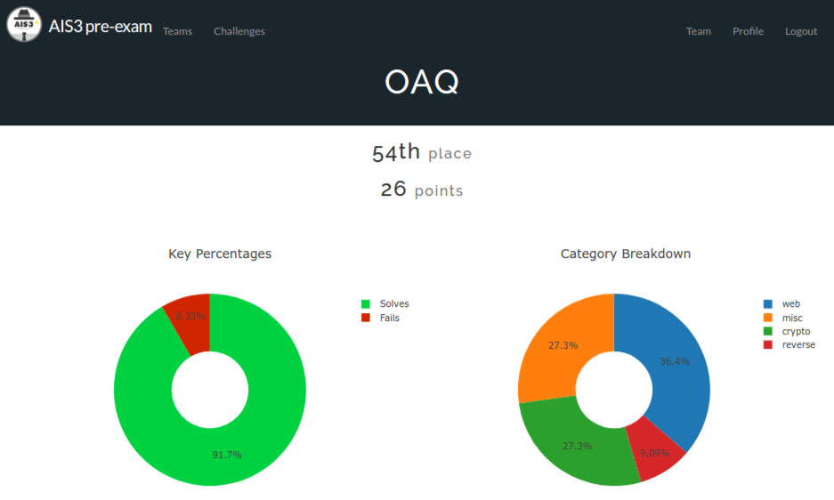
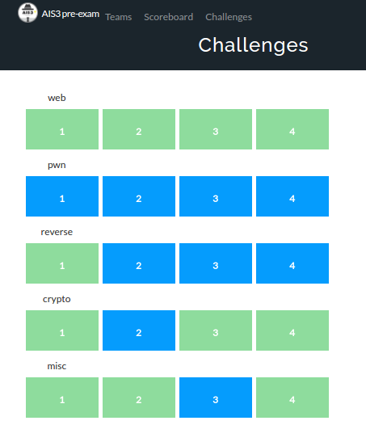

2017 Advanced Information Security Summer School pre-exam¶
附上戰績圖，做個紀念
 {kind=link}
{kind=link}
藍色是還沒解出來的題目，看的出來我對pwn和reverse之類的題目還是沒辦法阿QQ 之後可能要再多練練…障礙很大QQ
Web 1¶
打開網頁(index.html)，只看到一句 : Didn't you see the flag?
Source code也沒看到有東西，找了其他地方依然沒看到
開了terminal，curl 一下(只有domain name沒有加index.html)結果flag就噴出來了！？
發現原來web server預設的首頁是``index.php``，但是輸入index.php在url會被導向到index.html，所以就``curl`` 一下這個php就看到答案啦(根本腦筋急轉彎)。
Web 2¶
一開始會看到一個輸入帳號密碼的登入畫面，順便附上php 的source code給你。
source code裡面會看到一個username 對應password的list，密碼用sha1加密過
要得到flag的條件
if( $username == $list->$username && sha1($password) == $list->$password )
試著用網路上的sha1 decoder把他給的sha1 password逆回去發現找不到字串當密碼，好吧果然沒這麼簡單…
- 後來發現問題是出在``sha1($password) == $list->$password `` 這邊 [1] ，他用兩個``==
比較 sha1的值時，若sha1算出來的結果有出現像是``0e123...``這種帶有``e``(scientific notation)的格式，比較時會被當成 **float number format strings (numerical strings)**，所以就找了list裡面有``0e開頭的password和他對應的username，將這個username輸入，並找一段sha1之後值為``0e`` 開頭的字串輸入，就順利騙過==拿到flag啦
Web 3¶
很典型的PHP FILTER LOCAL FILE INCLUSION [2] , 看到網址列有
/?p=about 就不客氣用php filter 看一下php source code啦，/?p=php://filter/convert.base64-encode/resource=about，當然還要把base64轉成utf-8才看的懂，然後就在index.php的地方發現flag，秒殺
Web 4¶
延續第三題的題目，在index.php裡面找到了通往檔案上傳頁的路徑，過去看了一下，code表示必須上傳jpg檔，其他檔案一律無法（但他只檢查副檔名，不檢查內容），而且根據php filter看到upload頁面的source code(如下)表示:
$ip = $_SERVER["REMOTE_ADDR"];
$dir = "$target_dir/$ip";
if(!is_dir($dir))
mkdir($dir);
$newid = RandomString();
$newpath = "$dir/$newid.jpg";
if (move_uploaded_file($_FILES["fileToUpload"]["tmp_name"], $newpath))
{
header("Location: $newpath");
exit();
}
不管你丟什麼檔案，最後都會被執行哦XD 只是url看起來幫你加jpg而已，所以網頁跳出來的還是圖片的方式
使用 php phar LFI [3] [4] 的方式拿到shell，將含有shell的phar建好丟上去，然後url改成``/?p=phar://<dir>/asdf123.jpg/shell`` 執行phar裡面含有shell的部份，看到目錄底下有一個名字很可疑的檔案，cat一下就是flag囉
Binary 1¶
這題我只有解10秒，我的電腦是ubuntu，有裝wine，這題給的是一個exe檔，拿到後直接執行，flag就噴出來了…好吧先下一題，時間寶貴XD
使用Windows的同學表示難過，怎麼執行都看不到XD
Misc 1¶
Copy and Paste
Misc 2¶
網頁寫了一句話``I sent you something:)`` ，f12看一下才是誤導的開始，註解裏面給了一張sudoku.jpg的路徑，拿到這檔案之後什麼屁用都沒用阿QQ 被誤導一陣子之後回去從頭看題目，查了一下server送過來的response，果真header裡面藏了另一張圖的名字，最後flag就藏在這張皮卡丘裡面，pikapika~
Misc 4¶
ssh進去之後，底下有3個檔案 : flag , shell , shell.c
而我們登入的帳號並沒有權限可以access flag 這個檔案，必須透過shell這個跟flag相同權限的 excutable file 去access。
根據shell.c的code，我們可以執行指令在argv[1]，但把PATH拿掉了，代表我們只有built-in command [5] 可以使用，根據其他大大的提示，built-in 有個command可以load default path回來，所以最後就``./shell “command -p cat f*”`` 看到flag的內容啦~ f* 是因為shell.c過慮掉所有為flag的字串，所以就這樣繞一下
另外，某大大神人解：./shell read "PAT"H; cat "fl"ag
結論：該好好學shell了…
Crypto 1¶
題目原始碼如下 :
int main()
{
int val1 = ?????????, val2 = ?????????, val3 = ???????, val4 = ??????, i, *ptr;
char flag[29] = "????????????????????????????"; // Hint: The flag begins with AIS3
for(i = 0, ptr = (int*)flag ; i < 7 ; ++i)
printf("%d\n", ptr[i] ^ val1 ^ val2 ^ val3 ^ val4);
/*
964600246
1376627084
1208859320
1482862807
1326295511
1181531558
2003814564
*/
return 0;
}
下面註解給了7個數字，for-loop也是跑了７次，所以可以合理推斷註解的7個數字是``printf`` 出來的結果，利用``xor`` 可逆回的特性，"AIS3" ^ val1 ^ val2 ^ val3 ^ val4 = 964600246 , 所以可以得到 key = val1 ^ ... ^ val4 = "AIS3" ^ 964600246 , 利用這組key，跟其他六組數字做``xor``，就可以得到flag的ASCII啦
Crypto 3¶
這題也是給登入畫面和source code，拿到flag的條件很單純，就是 sha1($username) === sha1($password) ，Google一下 sha1 collision [6]，拿到兩份內容不同、但sha1 hash的結果相同的pdf檔，寫個php小程式read兩份pdf檔分別當作 username 和 password ，送POST [7] 出去，就成功拿到flag囉
Crypto 4¶
比Crypto 3 多了兩個條件：username 必須含有 Snoopy_do_not_like_cats_hahahaha 然後 password 比需含有 ddaa_is_PHD 字串，當然sha1 hash 的結果必須相同、且是``”f00d”`` 開頭。
因此我第一次的作法就兩份pdf各加一個字串、read binary 進程式然後分別塞``0x0~0xff``再後面，直到兩個檔案sha1的結果相同為止、並且是``f00d`` 開頭為止，結果跑了半個多小時還出不來，隔壁大神卻說他一分鐘之內就出來了，同樣都是用PC再跑那擺明就是我哪裡錯了QQ 後來發現這題並沒這麼複雜，我就把兩個字串concate再一起、都塞進pdf裡面，然後再塞``0x0~0xff進去``，發現原來``f00d`` 是設計過的，好快就算出來啦，得到新內容的兩份pdf延續Crypto 3的作法、餵給``username`` 和 password 就拿到flag啦！
心得¶
這是我第二次打AIS3 pre-exam，有了第一次被慘電的經驗，加上有位黑白大神平時常常分享很多有的沒的觀念、不厭其煩解釋給我聽，偶爾玩玩hackme的網站，所以發現自己慢慢學會如何抓到方向、知道該怎麼去解題，也比較明白CTF是怎麼樣的一個遊戲，在這邊默默的感謝他，雖然聽說這次題目比較簡單，但看到自己有能力解出一些題目，同時學到很多觀念，還是挺有成就感的！
Reference¶
| [1] | Why md5(‘240610708’) is equal to md5(‘QNKCDZO’)? : https://stackoverflow.com/questions/22140204/why-md5240610708-is-equal-to-md5qnkcdzo |
| [2] | Local file inclusion : http://www.paulosyibelo.com/2015/05/exploit-db-local-file-inclusion.html |
| [3] | php phar LFI : http://www.joychou.org/index.php/web/phar-lfi.html |
| [4] | Local File Inclusion -> 5). phar : https://github.com/lucyoa/ctf-wiki/tree/master/web/file-inclusion#5-zip-and-phar-wrappers |
| [5] | What is a built-in command in linux : http://www.linuxnix.com/what-is-a-built-in-command-in-linux/ |
| [6] | SHA1 collision : https://shattered.io/ |
| [7] | How to send post data through php : https://stackoverflow.com/questions/22281116/how-to-send-post-data-through-php |